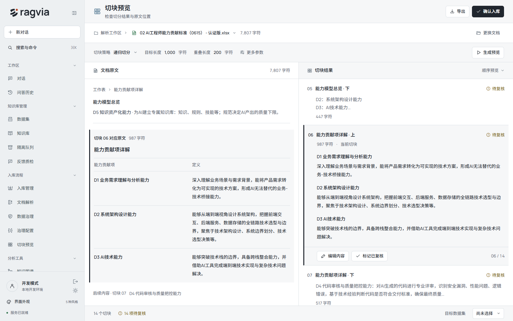

高级切块配置
02 AI工程师能力贡献标准（0615） - 认证版.xlsx
关闭
参数预设
当前参数
保存为预设
尚无已保存的预设
切块参数
与右侧上次预览对应
切块策略
递归切分
块大小
1000
字符
重叠大小
200
字符
入库管线
自定义管线
治理清洗
索引策略
向量索引
全文索引
结构化上下文前缀
知识图谱
事件索引
实体索引
插件
未配置
预览设置
自动预览 · 返回原文 · 解析缓存均开启
原文上限 100000 字符 · 最多 2000 块